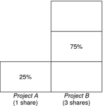
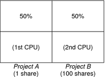
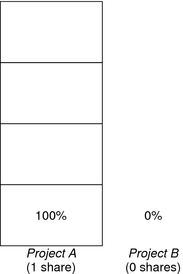

|
|||
|
Solaris Virtualization Product Overview 1. Introduction to Solaris Resource Management 2. Projects and Tasks (Overview) 3. Administering Projects and Tasks 4. Extended Accounting (Overview) 5. Administering Extended Accounting (Tasks) 6. Resource Controls (Overview) 7. Administering Resource Controls (Tasks) 8. Fair Share Scheduler (Overview) Combining FSS With Other Scheduling Classes Setting the Scheduling Class for the System Scheduling Class on a System with Zones Installed 9. Administering the Fair Share Scheduler (Tasks) 10. Physical Memory Control Using the Resource Capping Daemon (Overview) 11. Administering the Resource Capping Daemon (Tasks) 13. Creating and Administering Resource Pools (Tasks) 14. Resource Management Configuration Example 15. Resource Control Functionality in the Solaris Management Console 16. Introduction to Solaris Zones 17. Non-Global Zone Configuration (Overview) 18. Planning and Configuring Non-Global Zones (Tasks) 19. About Installing, Halting, Cloning, and Uninstalling Non-Global Zones (Overview) 20. Installing, Booting, Halting, Uninstalling, and Cloning Non-Global Zones (Tasks) 21. Non-Global Zone Login (Overview) 22. Logging In to Non-Global Zones (Tasks) 23. Moving and Migrating Non-Global Zones (Tasks) 24. About Packages and Patches on a Solaris System With Zones Installed (Overview) 25. Adding and Removing Packages and Patches on a Solaris System With Zones Installed (Tasks) 26. Solaris Zones Administration (Overview) 27. Administering Solaris Zones (Tasks) 28. Troubleshooting Miscellaneous Solaris Zones Problems 29. About Branded Zones and the Linux Branded Zone 30. Planning the lx Branded Zone Configuration (Overview) 31. Configuring the lx Branded Zone (Tasks) 32. About Installing, Booting, Halting, Cloning, and Uninstalling lx Branded Zones (Overview) 33. Installing, Booting, Halting, Uninstalling and Cloning lx Branded Zones (Tasks) 34. Logging In to lx Branded Zones (Tasks) 35. Moving and Migrating lx Branded Zones (Tasks) 36. Administering and Running Applications in lx Branded Zones (Tasks) 37. Sun xVM Hypervisor System Requirements 38. Booting and Running the Sun xVM Hypervisor 40. Using virt-install to Install a Domain |
CPU Share ExamplesAssume you have a system with two CPUs running two parallel CPU-bound workloads called A and B, respectively. Each workload is running as a separate project. The projects have been configured so that project A is assigned SA shares, and project B is assigned SB shares. On average, under the traditional TS scheduler, each of the workloads that is running on the system would be given the same amount of CPU resources. Each workload would get 50 percent of the system's capacity. When run under the control of the FSS scheduler with SA=SB, these projects are also given approximately the same amounts of CPU resources. However, if the projects are given different numbers of shares, their CPU resource allocations are different. The next three examples illustrate how shares work in different configurations. These examples show that shares are only mathematically accurate for representing the usage if demand meets or exceeds available resources. Example 1: Two CPU-Bound Processes in Each ProjectIf A and B each have two CPU-bound processes, and SA = 1 and SB = 3, then the total number of shares is 1 + 3 = 4. In this configuration, given sufficient CPU demand, projects A and B are allocated 25 percent and 75 percent of CPU resources, respectively. Example 2: No Competition Between ProjectsIf A and B have only one CPU-bound process each, and SA = 1 and SB = 100, then the total number of shares is 101. Each project cannot use more than one CPU because each project has only one running process. Because no competition exists between projects for CPU resources in this configuration, projects A and B are each allocated 50 percent of all CPU resources. In this configuration, CPU share values are irrelevant. The projects' allocations would be the same (50/50), even if both projects were assigned zero shares. Example 3: One Project Unable to RunIf A and B have two CPU-bound processes each, and project A is given 1 share and project B is given 0 shares, then project B is not allocated any CPU resources and project A is allocated all CPU resources. Processes in B always run at system priority 0, so they will never be able to run because processes in project A always have higher priorities.  |
||
|